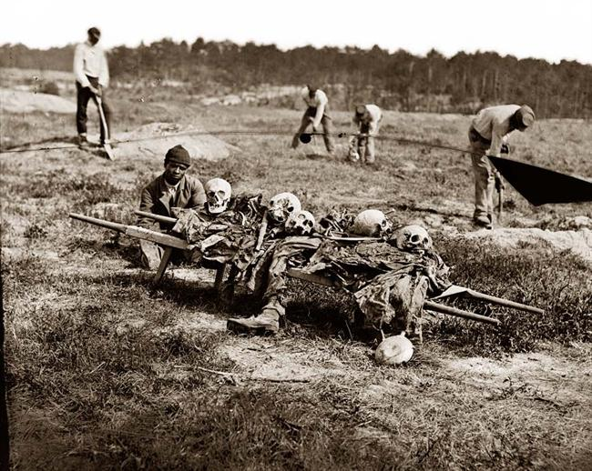

|
Cold Harbor was the bloodiest in a series of battles that
formed the Overland Campaign, which was undertaken by the

Ulysses S. Grant regarded his decision
to order a final charge at Cold Harbor as the greatest
mistake of his military career.
|
Union Army in early May of 1864. Besides the carnage, the
Battle of Cold Harbor was notable as a turning point when
defensive fortifications, siege warfare and relentless daily
fighting characterized the war in the Eastern Theater.
General Grant's Army of the Potomac marched south into
Virginia with hopes of putting an end to the conflict.
Northern morale was high, yet Lee and the Army of Northern
Virginia blocked Grant's relentless westward movements
toward Richmond, and inflicted heavy casualties on their
opponents. After the Battle of North Anna on May 23-26,
Grant moved west again and crossed the Pamunkey River. By
month's end, the left wing of the Federal force had reached
a tiny crossroads, called Cold Harbor, named after a tavern.
Cold Harbor had a road that led into the Chickahominy
River and then continued on to Richmond. Grant's plan was to
bring his Army through Cold Harbor, turn on Lee's right and
pin the Confederates in a vulnerable spot against the river.
Unfortunately, the Union forces delayed and the attack, set
for 4 a.m. on June 2, had to be postponed until the same
time on the next day. The Confederates, meanwhile, used the
extra time to build and extend their fortifications.
By pre-dawn of June 3, 59,000 well-entrenched Rebels
faced 108,000 Federals across a seven-mile front. Grant's
massive frontal assault on Confederate lines failed
miserably. That terrible day saw some 7,000 Federal
|

Some of the dead of Cold Harbor.
|
causalities (compared to less than 1,500 for the Rebels),
and shattered three Union corps. One northern soldier
described some details of the assault: "The time of actual
advance was not over eight minutes...In that little period
more men fell bleeding as they advanced than in any other
like period of time throughout the war." The assault was a
disaster, and before the end of the day, Grant stopped the
fighting. "I regret this assault more than any one I have
ever ordered," he said.
Cold Harbor culminated a month of non-stop campaigning
for both armies. The North had experienced 50,000 losses,
and the South 32,000. In percentages, that represented 41%
of Grant's forces and 46% of Lee's. These losses were a
disaster for the South which could not replenish its armies.
Although the Battle of Cold Harbor and the Overland Campaign
resulted in northern losses or stalemates on the field,
Grant's overall strategy of attrition was working.
Source: Joan Waugh, ed., Facts on File Encyclopedia of American
History: Civil War and Reconstruction, 1856 to 1869 (New York: Facts on
File, 2003), 68.
|